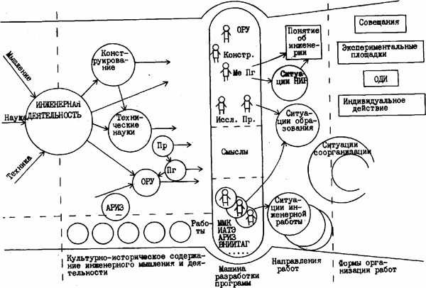

Исследовательские программы в сфере инженерной деятельности
Мои цели состоят в том, чтобы обобщить и подытожить то, что обсуждалось на конференции, произвести предварительную систематизацию, выделить и наметить основные направления, пути и ситуации дальнейшей работы по теме «Методология инженерной деятельности».
Что включает в себя общее представление об исследовательских программах в сфере инженерии? Первое вводное утверждение: исследовательскую программу не нужно путать с программами работ, с программами проблем, целевыми программами и программами другого типа. Научно-исследовательские программы (я буду далее говорить исследовательские программы), принадлежат пространству истории и культуры и поэтому то, что здесь я сейчас буду обсуждать, относится к этому пространству — пространству истории и культуры и тем самым, когда я стану рисовать здесь ситуацию нашего совещания, я буду понимать каждое действие, высказывание, все происходившее здесь, как принадлежащее этому пространству.
Я выделил на схеме несколько подпространств. Первое — это подпространство содержания инженерного мышления и инженерной деятельности как сложившегося и транслирующегося в культуре. Второе — это подпространство разработки программ. Здесь я буду рисовать машину разработки, обсуждая то, что происходило на нашей конференции. Я рассматриваю нашу конференцию как мегамашину, в ходе работы которой осуществлялся очередной шаг в разворачивании исследовательской программы. Следующее подпространство — это то, что лежит в будущем, т.е. то, куда мы выходим. Здесь я буду выделять основные направления продолжения работ — одно подпространство и возможные формы организации работ — последнее.

Я начну с машины разработки программы. В этом подпространстве я выделил три слоя. Верхний — слой нормативной организации работы программирования. Здесь, во-первых, нужно выделить организатора, руководителя и управленца этих работ (это, в частности, те, кто организовывал, готовил и проводил эту конференцию). Здесь нужен обязательно методолог программирования — тот, кто обсуждает, каким образом в рамках того мероприятия, которое мы проводим, нужно строить работу программирования. Здесь нужен конструктор, который обеспечивает методолога программирования. Вот я, например, в большей части своих выступлений пытался выступать в этой позиции, она для меня была фокусной. Я заготавливал разного рода конструкции, которыми пытался обеспечивать работу организатора, обобщенного организатора, который включает и Георгия Петровича Щедровицкого.
В обслуживающую оргуправленца команду, кроме методолога программирования и конструктора, входит технический исследователь. В частности, когда мы по вечерам производили рефлексию работы конференции, то мы организовывали такую работу — техническое исследование: смотрели, что происходит, как движется работа, что нужно сделать и какие произвести трансформации. И еще одна очень важная позиция в этой команде — позиция проектировщика. Он обсуждает следующие шаги, что должно быть сделано в ходе работы, например: какие темы нужно обсуждать, какие доклады оставить на следующий день, и вообще, что нужно обсуждать дальше в соответствии с тем, как разворачивается работа.
В нижней части подпространства позиционеры в кружочках символизируют единицы целевого действия здесь на конференции. Это тезисы или текст, который произносится с определенными целями. И мы это имели здесь в достаточном количестве. В средней части — это смыслы и содержание, которое соответствует обсуждаемой теме и которое должно выделяться организатором, руководителем и управленцем — тем, кто ведет дискуссию, когда на общем заседании эти единицы целевого действия начинают действовать в соответствии со своими целями. Это могут быть отдельные люди, это могут быть представители определенных групп (если это игра, например, и сформулирована групповая точка зрения), это могут быть представители предметных областей, высказывающие предметно-профессиональную точку зрения. И на этом я бы покончил с мега-машиной программирования.
Что является и должно быть результатом работы этой мегамашины? Каким должно и может быть продолжение? Я сначала обсужу будущее, а затем вернусь к прошлому, собственно к содержанию темы. Первый шаг — то, что может и должно происходить в принципе дальше. Работа в рамках исследовательской программы может быть организована как минимум по четырем направлениям. Первое — это выход к программам научных исследований и разработок. И это надо обсуждать отдельно, обсуждать и выделять темы возможных исследований и разработок (я некоторые из них, которые мне кажутся важнейшими, дальше перечислю). Второе — можно выход этот осуществлять по программам образовательных экспериментов. И эта тема намечена на следующую конференцию здесь в Обнинске, и это уже реализуется частично: в некоторых экспериментах в Харькове, в частности, и в других местах.
Третий выход возможен в ситуации инженерной работы — на предприятиях, в группах изобретателей и т.д.
И, наконец, самый важный для меня выход. Это выход в такие ситуации с я их называю ситуации искусственно-технического комплексирования), за счет которых можно продолжать дальнейшие шаги по программированию и обеспечивать процесс развития этих разработок. Возможное направление продолжений — такого рода работы, которые мы проводили в ходе этого совещания.
И последнее подпространство — это разного рода формы организации этих направлений работ. Это, скажем, могут быть: работающие группы исследовательские (в Харькове, в Киеве, в Москве), семинары, конференции, на которых разворачиваются тематические обсуждения в рамках программ НИР. Это могут быть экспериментальные площадки в вузах: кафедры, вузы, другие системы подготовки. Это могут быть ОДИ — третий тип форм организации. И, наконец, это может быть индивидуальное действие, если у вас нет семинара, нет возможности организовать экспериментальную площадку, вы можете попытаться реализовать продолжение, в ходе индивидуального действия.
Работа, которую организовывает и проводит эта машина программирования, есть работа по инженерии знаний. Мы здесь работали со знаниями, накопленными в истории и в культуре в ориентации на то, чтобы получить новое знание за счет особого комплексирования содержаний в ходе конструкторской, проектной и других видов работы. И как важнейшие идеи, которые нуждаются в дальнейшей тематической проработке, в реализации в экспериментах образовательных и т.д., я выделил пять таких идей. Первая идея -это идея искусственно-технической картины мира. На мой взгляд, она должна дальше прорабатываться, хотя мы здесь основательно, на мой взгляд ее продвинули. Она могла бы стать темой особого семинара, темой специальных разработок, а может быть, даже и совещания.
Вторая идея — идея сферной организации. Она обсуждалась меньше, то с точки зрения темы «Методология инженерной деятельности», сфера инженерии является важнейшей. Она очень интенсивно обсуждалась на многих предыдущих наших совещаниях и играх и должна обсуждаться дальше.
Третья тема — тема экспериментирования: как в образовании, так и в инженерии, в инженерной деятельности.
Четвертая тема — это складывание инженерной деятельности или инженерной мыследеятельности, т.е. те формы организации (не исторический процесс, за счет которого складывалась эта деятельность до настоящего времени) за счет которых мы будем производить эту работу искусственно-технически.
И, наконец, пятая важнейшая тема — это индивидуализация искусственно-технической картины мира или выращивание искусственно-технического отношения. Для меня она как значимая и важная всплыла и встала в ряду других значимых тем — здесь, на этой конференции.
И, наконец, последнее пространство, по отношению к которому можно рассуждать очень долго, поскольку оно наиболее емкое и содержит в себе всю предшествующую историю инженерного мышления, инженерной деятельности, инженерных работ. Я не буду подробно это подпространство обсуждать, поскольку тут нужна специальная исследовательская историческая работа. Но какие-то моменты, позволю себе отфиксировать. Например, для меня это подпространство содержания инженерного мышления и инженерной деятельности запределено теми содержаниями, которые мы здесь обсудили как задающие первое представление об инженерии. Это техника или технические искусства; это новые науки: экспериментальная работа Галилея и других методологов, конструировавших идеальные объекты науки в рамках методологических разработок; наконец, третий фокус — это работы логического конструирования, конструктивной мыслительной работы (это математика и, соответственно, Евклидова геометрия, механика, как она складывалась в работах Гюйгенса, где наметилась далее особая линия конструктивного мышления или конструктивной работы с содержанием мышления). Инженерия есть особое соединение техники с научными исследованиями и работой по конструированию как идеальных объектов, так и некоторых конструкций, которые могут быть использованы в качестве проектов. А дальше идет ряд важных линий и направлений развития и я бы остановился на одной из них особо. На линии, связанной с техническими науками. Я утверждаю, что когда мы начинаем обсуждать историю инженерной деятельности, то линия на строительство технических наук оказывается важнейшей в том плане, что технические науки функционально принадлежат и создаются для того, чтобы обеспечить воспроизводство инженерной деятельности. Техническая наука обеспечивает целевое действие. Когда создавалась начертательная геометрия, а далее теория машин и другие технические науки, то они создавались прежде всего в установке на это целевое действие. Обобщить опыт инженерной работы и инженерного мышления и передать и транслировать этот опыт в ходе подготовки инженеров. Поэтому место технических наук все подпространство содержания инженерного мышления и деятельности фокусирует на пространстве содержания подготовки инженеров. Вот в этом месте должен задаваться переход в другое пространство или наоборот: от другого пространства и требований, им задаваемых — сюда. Важно, что здесь завязаны эти два пространства. И поэтому технические науки далее начинают фактически выступать в форме учебных предметов. И появление новых технических наук, на мой взгляд, дальше должно обсуждаться как связанное с задачами трансляции.
Такой тип мышления, а далее и тип деятельности, как проектирование складывается впервые в работах (как это показано в исследованиях ММК) Энгейльмейера и Ридлера, посвященных машиностроительному черчению. Они формировали вот эту особую учебную дисциплину — машиностроительное черчение. И решали задачку — как обсуждать разные принципы работы со схемами машин и механизмов. а далее — механизмов реализации этих схем на разного рода материале В частности, этот вопрос прорабатывал В. М. Розин и сделал, тем самым, исторический вклад в работу по анализу проектного мышления и проектной деятельности. А дальше я еще бы остановился на программировании как особом типе деятельности, где мышление оказывается обеспечивающим организацию, руководство и управление. И так далее. Все, что в этом подпространстве я начал рисовать, нуждается в дальнейшей исторической проработке. Используя это подпространство, можно обсуждать тему исторических исследований и определять темы диссертационных исследований, за счет которых может быть обеспечена программирующая работа по развитию инженерии и, соответственно, работа по конструированию и выходу к проработке тех понятий и представлений, которые должны нам обеспечить нормальную инженерную работу, соответствующую современной социо-культурной ситуации, и подготовку новых инженеров с искусственно-техническим отношением. Перед нами широкие горизонты и дальние перспективы для разворачивания исследований и разработок.
 All rights reversed
All rights reversed
Исполнение — Артём Резников